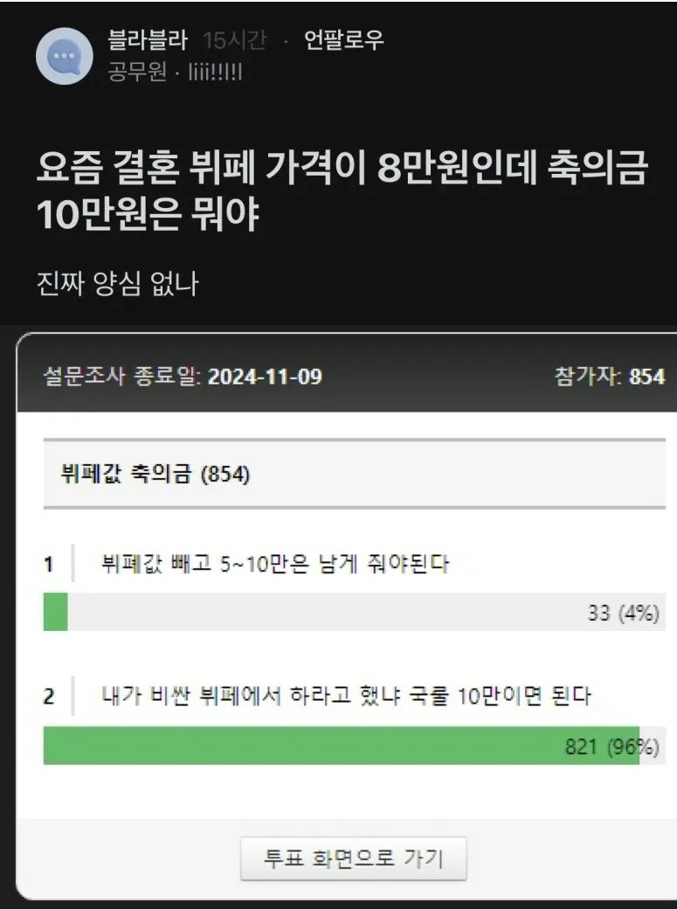

축의금 모아서 집사려고 그러나
ㅊㅊ: https://humoruniv.com/pds1425647

축의금 모아서 집사려고 그러나
ㅊㅊ: https://humoruniv.com/pds1425647
소중한 시간 노동력 내서 방문해줬는데 돈까지 바라네
내가 30짜리 초호화뷔페에서하면서 축의 50만원씩하라하면 군말없이할거냐고 ㅋㅋㅋ 개소리도 정성껏하네 ㅋㅋㅋ 그럴거면 청첩장돌리지마라 좀
저거근데 실제계약할때금액기준으로 말하는거맞지?
계약전 웨딩홀기준금액기준 말고
밥을 팔고싶으면 밥집을 차리십쇼
밥으로 돈을 벌고 싶으면 식당을 해 씨발련아
뭐긴 씹년놈아, 니 배우자보다 하객 적어서 쪽팔지 않게 도와주는거지ㅋㅋㅋㅋㅋ
근데 진짜 밥이 맛있는 결혼식이 있었나? 하객으로 있으면서 없었던거 같음. 근데 8만원 받네 씨발 ㅋㅋㅋㅋ 결혼식 가서 제일 맛있게 먹었던게 시간 없어서 만원 돌려받고 버거킹 먹었던거였음.
그럼 너놈은 얼마를 원하는거냐?????
함바집차렸나 씨-펄련들이 ㅋㅋㅋㅋㅋ
누가 비싼데서 하라고 칼들고 협박함?
국물이 5에서 언제 10이된거임?
막상 결혼해보면 축의금 얼마냈는지 관심도없음 그냥 와주면 고마운거지 솔직히 축의금 안내도그만임
저번 주말에 친척형 결혼식 수금조 해보니 가장 많은 금액이 20 그다음이 10 드물게 15 이렇게 있더라
10이 그나마 마지노선이지 청모를 했으면 다르지만
우리가 뷔페 식대를 어떻게 알어 시발아